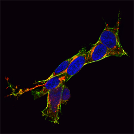
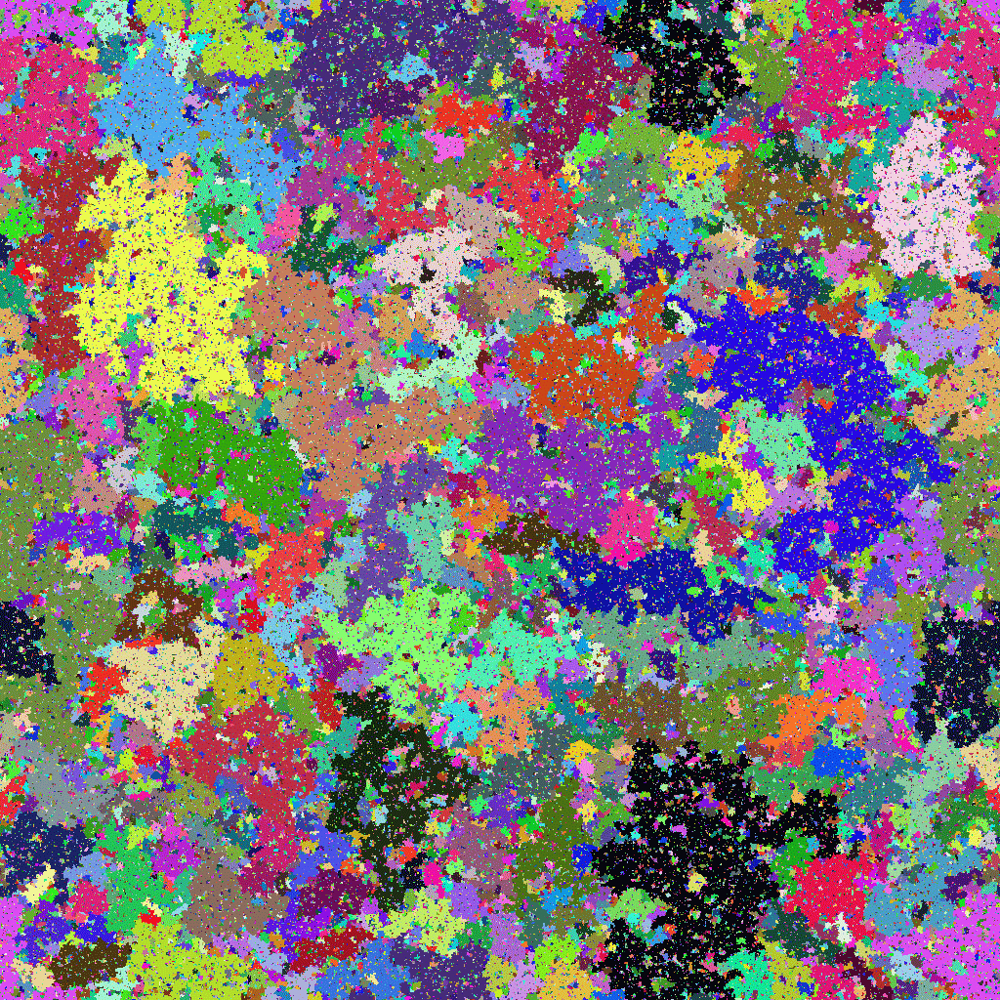
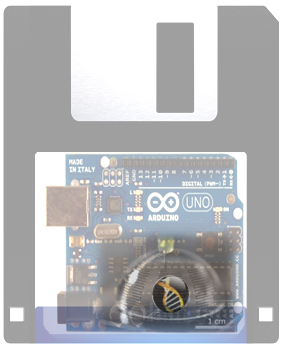
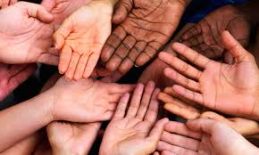

Projects
Testing of Developmental Neurotoxicity by in vitro methods
The exposure to industrial chemicals, pesticides (like glufosinat ammonium) and drugs during the early childhood cause the increasing incidence of neurodevelopmental disorders worldwide. However, due to the lack of studies, only several industrial chemicals have been identified as developmental neurotoxicants so far. Hence, our assignment will be to prove possible developmental neurotoxicity of glufosinate ammonium which is one of the ingredients in the nonselective herbicides with suggested in vitro and ex vivo neurotoxic effects (like the cytoskeleton pesticides-induced deterioration) on the brain during the early childhood.
The experimental approach will be related to in vitro aspects (cell culture) of our neurotoxicologic studies, allowing us to analyze post-translational impairments and their consequences at the cellular level of the tumor cell culture obtained from a rat C6 glioma. In order to evaluate cellular proliferation, migration and viability of C6 cells exposed to different concentration of pesticides and their metabolites, MTT test will be performed. In addition, SDS-PAGE and Western blot analysis will be performed on proteins like GAPDH and MAP2 to inspect effects of pesticides on these proteins.
Iva Salamon
University of Zagreb/ Faculty of Science and University of Orleans, France
Iva is a student of molecular biology, enrolled in the Bioindustrial Techniques (Techniques Bio-Industrielles) Programme jointly implemented by both the Faculty of Science in Zagreb, Croatia and the University of Orléans, France. Currently, she is working on her Master thesis in the field of neuroscience/neurotoxicology. Her dominant research interest targets the understanding of genetic, cellular and molecular basis and mechanisms that have an important role in normal neurodevelopment, neurodegenerative impairment and disease progression. In her free time, Iva likes to cook, watch movies, and just chill out with her friends.
Life of a web request. How the Internet works?
 The Internet is becoming one of the most important tools people use to read, do and share research, messages and ideas. Many people use it as a tool, but not everyone really understands how the Internet and the networks work, evolve and keep spreading their influence. The Internet is by itself a very vivid subject of research related to the domain of distributed systems with very active and open research, mixing industry and academy. Making computers talk to each other seems obvious today, but network protocols, enabling us to do so are the results of a long process involving engineering and scientific research.
The Internet is becoming one of the most important tools people use to read, do and share research, messages and ideas. Many people use it as a tool, but not everyone really understands how the Internet and the networks work, evolve and keep spreading their influence. The Internet is by itself a very vivid subject of research related to the domain of distributed systems with very active and open research, mixing industry and academy. Making computers talk to each other seems obvious today, but network protocols, enabling us to do so are the results of a long process involving engineering and scientific research.
The goal of this project would be to study, understand and recreate all protocols that make the Internet the way it is. We will study the Internet’s structure and protocols through experiments and dissection of network activity. We will use and write programs to explore what happens at the networking level as you surf the Web, use a search engine, send emails and more. All these protocols would be tested and in the end, students would be able to craft a little Internet system working within their own network.
Rémy Léone
Telecom Paris Tech, France
Remy is a PhD student working at Telecom Paris Tech in the field of Wireless Sensors Networks. His research interests are passive monitoring of networks, active estimation of energy reserve and lifetime expectancy of a network. Remy was a student of S3++ in 2007 and a member of Paris Montagne Association since 2006. This association is involved in the spreading of science popularization among the youngsters by giving a flavor of scientific research.
Percolation - An insight into random systems
For the majority of us brewing coffee or tea by pouring hot water over the filter containing coffee or tea is an everyday activity. Underlying the filtering part is the process of percolation, which refers to fluid flow through porous materials. Lets imagine a block of such a material. If we pour some liquid on it, will it be able to move from hole to hole until it reaches the bottom? A mathematical model known as the percolation theory gives the answer to this question. Due to its simplicity and robustness this model also found an application in a wide variety of other problems ranging from the conductivity of materials, biological evolution, epidemiology, all the way to the formation of galaxies.
To begin the project we will design a toy model in 2D, which will help us in understanding the basic properties of percolation. The project will be realized both experimentally and through a computer simulation in the C programming language. Simultaneously, we will get acquainted with the basics of statistical physics and other relevant theoretical aspects. The gathered knowledge from the first part will be important in understanding the phenomenon in a more complex system, which will ultimately present the second part of our project. We will design an experiment to observe a percolative phase transition in a 3D material and determine the critical exponents predicted by the renormalization theory.
Toni Marković
University of Zagreb, Croatia
Toni is a 4th year physics student at the University of Zagreb, Faculty of Science. He was a Summer School participant three times (S3 2009, S3++ 2010, 2011) and a swapshop leader (S3 2012). Although he spent his last summer working in the field of biophysics, his interests have shifted to a solid-state physics. Playing basketball and video games preoccupies a good amount of Toni’s free time. He also enjoys learning tricks, solving puzzles, reading fictional books and cycle. Not at the same time, though. That would be dangerous.
Automating Biology - An End to End Approach
The inability to reproduce the majority of results in the biological research has long been the “elephant in the room”. With the cost of research and development skyrocketing, it is critical that we address the issue of reproducibility. Presently, there are many interesting approaches being used to tackle the problem; such as ‘reducing inconsistencies’ by defining standard formats to share the resulting data of biological research, ‘minimizing human-error’ by automating the biological experiments and removing the person-to-person variability while carrying out experiments and finally ‘improving communication’ by making the scientific data more accessible to everyone.
In this project, the students will learn about the approaches used to minimize the ambiguity in biological research. There are different approaches being developed to automate biological experiments and we will learn something about the hardware platforms currently used (microfluidic devices and pipetting robots). We will attempt to address the above mentioned problems of reproducibility by drawing upon from different paradigms of computer science. In this regard, we will discuss a simple programming language that we are currently developing, capable of describing biological experiments and the subsequent automated execution on different platforms. The students will describe biological experiments in an easy-to-use programming language which will allow them to learn the different ways of conducting experiments in biology, as well as what transformations experimental protocol needs to go through in order to be automated.
Vishal Gupta
Technical University of Madrid, Spain
Vishal has a bachelor’s degree in biotechnology and a master’s degree in nanobiophysics. He is presently pursuing his PhD in a field of Artificial Intelligence at the University of Madrid. Scientifically, he likes a mix of biology, physics and engineering. When he is not working, he likes to read, dance, cook and travel.
Ismael Gomez Garcia
Technical University of Madrid, Spain
Ismael obtained his bachelor's degree in mathematics at the Universidad Autónoma de Madrid in 2011. In 2012, he also obtained his bachelor's degree in computer engineering, followed by a master’s degree in computer science at the same University. Now, he is doing his PhD on a directed evolution and microfluidics automation, with particular focus on topics related to bio-lab automation and modeling of evolutionary processes. When he is not working, he likes playing football, reading and listening to music.
Making of the Limbs: From Pinkies to Thumbs
Embryonic development is a very tightly controlled process. Many genes need to be expressed at the right time, right place and right amount in order for the proper formation of body parts. If we look at our hands, most of us are born with five fingers on each hand. The structure of our hands allows us to hold pipettes, type on computer and do many other things. Even though some people have long slender fingers and some have short stubby fingers, the size proportion between fingers and the organization of fingers are similar. Nonetheless, some people are born with hand abnormalities, such as fused, extra or missing fingers. Understanding the genetic mechanism behind the hand formation will not only provide possible clues to the cause of these hand abnormalities, but will also aid in the quest of comprehending the process of limb regeneration.
In this project, we will investigate the gene expression patterns in normal mouse limb development. First, we will use in situ hybridization techniques on tissue slides to map out and visualize the temporal and spatial expression domains of different genes involved in limb formation. The students will learn the basic concept of embryonic development with the focus on the limbs. They will also be introduced to in vitro RNA visualization methods. Next, we will explore the consequences of the certain genomic aberration on limb development by studying some human syndromes manifesting as limb abnormalities. The students will learn the concepts of long-range gene regulation by enhancers. They will learn how to validate the mutations by PCR and gel electrophoresis. Through these exercises, the students will gain insights into common lab techniques and thought process used in developmental biology.
Leslie Pan
EMBL Heidelberg, Germany
Leslie is doing her PhD at EMBL Heidelberg, studying chromosome dynamics of long-range enhancers and its target genes. She obtained her bachelor’s degree in Chemistry/Biochemistry from University of California, San Diego. She worked as a clinical trial coordinator before her studies at Karolinska Institutet. She can be found in restaurants trying out new food, or in her flat reading non-fiction books and watching cartoons in order to learn German. This will be the first time she is participating in the Summer School.
Crystal growth: An experimental approach
 Even if we are not aware of it, crystals are everywhere in the nature. Minerals, snowflakes, even the table salt, they are all made of crystals! But they are not just pretty things made by nature. Crystals and especially crystal growth are essential for mankind. For example, most of our medicines are made by crystal growth. In order to have useful and harmless medicines, we need to perfectly master this process. Crystal growth is also used for jewelry, food development and even for military applications! Scientific fields which use crystals are quite abundant and diverse, ranging from the creation of medicines to the improvements in the food development, and will continue to grow in the future.
Even if we are not aware of it, crystals are everywhere in the nature. Minerals, snowflakes, even the table salt, they are all made of crystals! But they are not just pretty things made by nature. Crystals and especially crystal growth are essential for mankind. For example, most of our medicines are made by crystal growth. In order to have useful and harmless medicines, we need to perfectly master this process. Crystal growth is also used for jewelry, food development and even for military applications! Scientific fields which use crystals are quite abundant and diverse, ranging from the creation of medicines to the improvements in the food development, and will continue to grow in the future.
This project is formed out of two parts. First we will discover how a crystal is made, (mainly theoretical properties will be covered, such as construction of crystal structure). Then, we will investigate how crystal growth works by doing chemistry. In this part, we will grow several crystals from different components to see possible forms and colors and finally the completion of the crystal growth. We will study the importance of this process and particularly the role of possible modifications, which can be of special importance in the pharmaceutical industry. Finally, formed crystals will allow us to establish links between theoretical and experimental concepts in crystal growth.

Juliette Piquard
University of Grenoble, France
Juliette is currently doing a PhD in crystal growth at University of Grenoble. She is particularly interested in characterization of the matter of the crystal compartment. In her free time, Juliette likes to read books, watch movies and play games. Also, she draws a lot, especially comics. She is involved in a club that popularizes science, with special focus on chemistry. Juliette has already participated in the Summer School in 2007 when she was involved in an astronomy project.